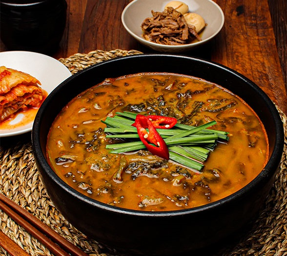

추어탕
음식>아시아의 음식>대한민국의 음식
한국에서 미꾸라지를 넣어 끓이는 국물 요리로, 주로 가을에서 겨울에 즐겨먹는다
미꾸라지는 가을에 가장 맛있기 때문에 추어탕도 가을, 겨울에 제맛이라고 한다. 때문에 "秋魚湯"이라고도 한다.
 주인장이 개인적으로 가장 좋아하는 음식이다. 안 먹어본 사람은 한번쯤은 꼭 먹어보길 추천한다.
요리법
기본정보
- 조리시간: 90분
- 분량: 2인분 기준
- 칼로리: 1인분 당 455kcal
요리재료
- 주재료: 미꾸라지 600g, 우거지(얼갈이배추 삶은 것) 150g
- 부재료: 시래기(무청 삶은 것) 100g, 고춧가루 2큰술(10g), 된장 1과 1/3큰술(20g), 참기름 2/3큰술(10ml), 마늘 8쪽(40g), 소금 1큰술(10g), 대파 20cm(40g), 생강(마늘 크기) 4톨(20g), 청양고추 3개(30g), 물 6컵(1.2L), 마늘(다진 마늘) 2큰술(20g), 들깨가루 4큰술(20g)
요리과정
- 미꾸라지는 뚜껑이 있는 그릇에 넣고 소금을 뿌려 해감을 토하게 한다.
- 거품이 일면서 미꾸라지가 죽으면, 다시 소금물에 여러 번 헹군다.*
- 솥에 미꾸라지, 물, 마늘, 생강, 소금을 넣고 푹 삶아준다.*
- 시래기와 우거지는 끓는 물에 데친 다음 적당하게 썰어 분량의 양념에 무쳐둔다.
- 삶아 건진 미꾸라지에 풋고추와 들깨를 넣고 미꾸라지 삶은 국물을 좀 넣은 다음 곱게 갈아준다.
- 미꾸라지 삶은 국물에 5를 넣고, 야채를 넣은 후 한 번 더 끓여낸다.
＊(미끈거리는 느낌이 없이 깨끗하게 씻어준다.)
＊(중간에 뜨는 기름과 야채는 건져준다.)
©yejiseyo